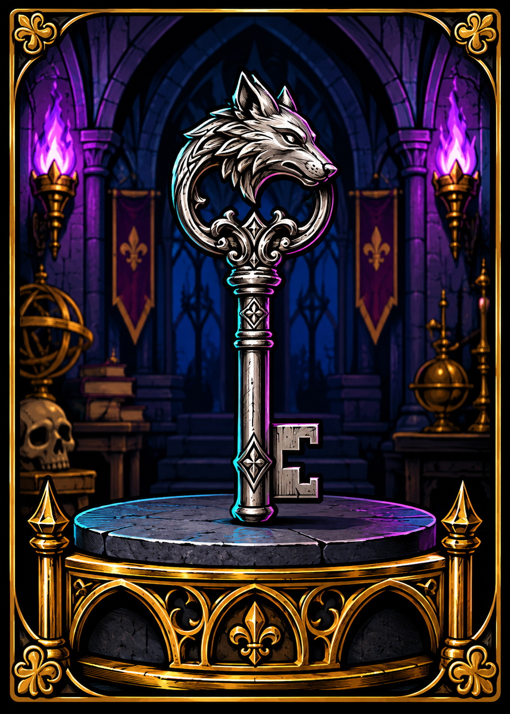
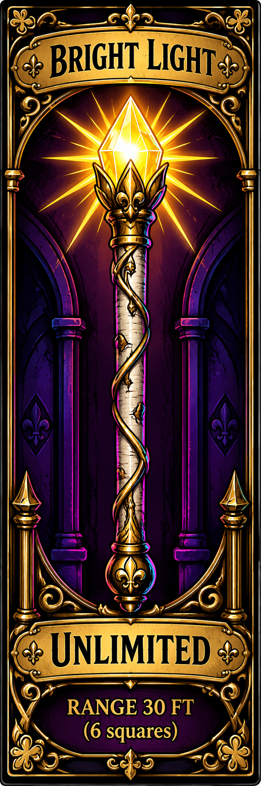
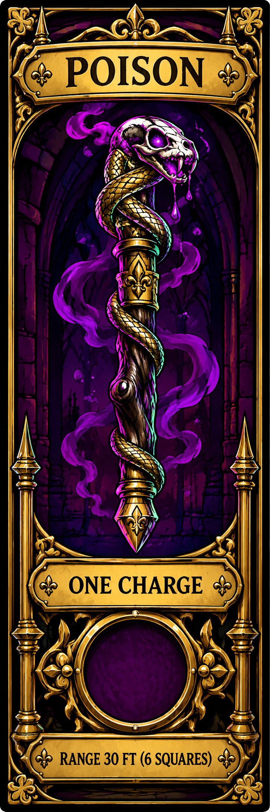
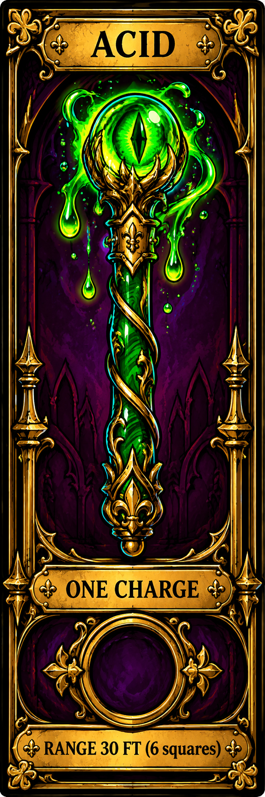
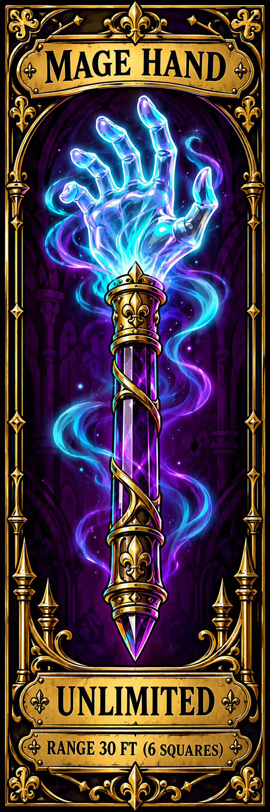

Cut out the 5 × 7 inch card.
Cut out the 5 × 7 inch card.
Cut out the 5 × 7 inch card.
Cut out the 5 × 7 inch card.


Bookmark cards: 2.5 × 7.5 inches, preserving the generated proportions.


Bookmark cards: 2.5 × 7.5 inches, preserving the generated proportions.
Place each token on its wand’s socket. Hand the token to the DM when used.
| Alcove | What we tested | What happened |
|---|---|---|
| I | ||
| II | ||
| III | ||
| IV |